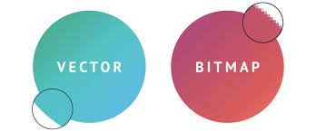

Compressietechnieken zijn technieken die worden gebruikt om verschillende bestanden zoals tekst, beeld en geluid op te slaan op een manier die minder ruimte opneemt.
Dit wordt comprimeren genoemd. Tijdens het comprimeren kijkt de computer naar onnodige of inkortbare informatie en verwijdert of verkort vervolgens die informatie.
Bij compressietechnieken is het dus van belang dat er niks fout gaat, anders gaat er wellicht informatie verloren.
Het comprimeren van deze informatie is een erg ingewikkelde taak en vergt daarom dus ook veel moeite van de computer.
Comprimeren duurt daardoor erg lang als je dus bestanden wil comprimeren moet je een afweging maken tussen opslagruimte of tijd.
Als je tijd belangrijker vindt zal je waarschijnlijk geen moeite steken in het comprimeren, maar als je databesparing belangrijker vindt zal je wat tijd verliezen aan het comprimeren.
Zoals eerder vermeld kunnen niet alleen teksten worden gecomprimeerd, maar ook beeld en geluid. Voor afbeeldingen worden over het algemeen twee compressietechnieken gebruikt, JPEG en PNG.
JPEG (Joint Photographic Expert Groups) is een compressietechniek die informatie weet te comprimeren door zogeheten cosinustransformaties te gebruiken; de loze informatie wordt hierdoor verwijderd, maar de afbeelding blijft nog wel scherp.
Het enige nadeel van JPEG is dat er af en toe wel wat informatie verloren gaat, dit is bij kleine compressieniveaus geen probleem, maar bij grote compressieniveaus kan er kwalitatief verlies optreden.
PNG (Portable Network Graphics) gebruikt verschillende kleine techniekjes die makkelijker zijn dan JPEG, PNG filtert de informatie die wel of niet nodig is en maakt gebruik van LZW-compressie.
Hierdoor ontstaat er vrijwel geen kwalitatief verlies; het wordt over het algemeen gebruikt voor afbeeldingen met tekst of speciale elementen zoals transparantie.
Hieronder zie je een PNG van dobbelstenen omgeven door grijs/witte blokjes, deze blokjes worden door de computer gezien als transparant en dus zullen ze worden verwijderd als dat nodig is.
Ook staat er een voorbeeld van een JPEG die van links naar rechts steeds meer gecomprimeerd is.

Niet alle afbeeldingen zijn hetzelfde, je hebt verschillende soorten afbeeldingen die voor de computer dus ook anders in elkaar zitten. Er zijn heel heel veel verschillende soorten, maar hier ga ik het hebben over de vector- en de bitmapafbeeldingen. Bitmap afbeeldingen gebruiken pixels met de kleuren RGB. De bitmapafbeeldingen worden niet op een willekeurige manier in elkaar gezet maar in reeksen hierdoor zijn ze ideaal voor gradiënten en kleurovergangen; helaas staat de resolutie van een bitmapafbeelding wel vast waardoor er tijdens het vergroten van de afbeelding de scherpte verdwijnt. Vectorafbeeldingen zijn geen pixels, vectorafbeeldingen worden opgebouwd door wiskundige formules, die vooral bestaan uit cirkels, lijnen en curves. Ook de kleuren zijn beschreven door de wiskundige formules. Het fantastische aan de vectorafbeelding is dan ook dat er geen resolutie verloren gaat bij het vergroten en verkleinen van de afbeelding. Zie hieronder nog een verschil tussen de bitmap- en vectorafbeelding. meer te weten komen over afbeeldingen? Klik dan Hier
